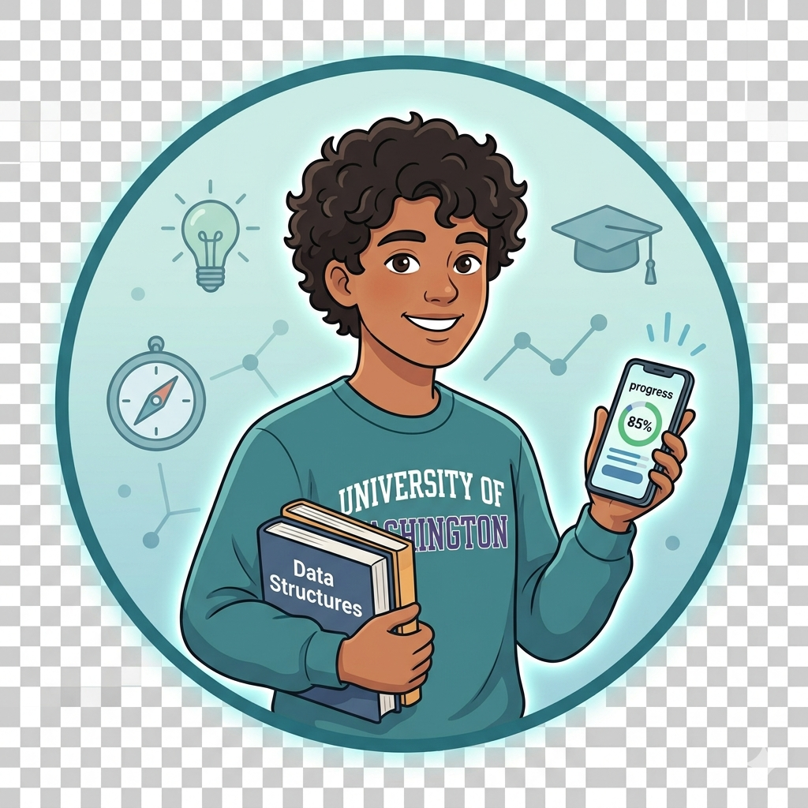

About Me
Learn more about my educational background, technical journey, career goals, and personal interests in technology.
Abah Anthony
Department: Cybersecurity
Level: 100 Level
University: Miva Open University
Educational Background
I am currently a 100 Level Cybersecurity student at Miva Open University. My academic focus includes digital security, programming, networking fundamentals, cloud computing, and modern web technologies. I am actively building practical skills through projects and lab exercises.
Career Aspirations
My goal is to become a professional cybersecurity expert specializing in ethical hacking, secure system design, cloud security, and network protection. I aim to develop solutions that strengthen digital infrastructure and protect users from cyber threats.
Technical Skills

Professional Interests
Cybersecurity, networking, cloud computing, web development, and digital innovation. I enjoy understanding how systems connect and how to secure them.
Hobbies & Interests
Learning new technologies, building websites, reading cybersecurity content, solving technical problems, and exploring cloud systems.